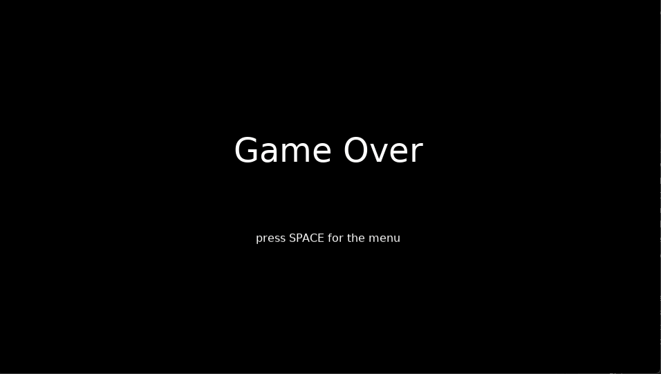

01
Custom ECS
Entidades, componentes, recursos, eventos, sistemas, scheduling y escenas.
Cómo se implementó
El ECS personalizado separa el juego en entidades, componentes, recursos y sistemas. Cada entidad usa un identificador generacional para evitar referencias obsoletas; sus componentes se almacenan por tipo y el World ofrece una API para crearlas, consultarlas y modificarlas. Los sistemas consultan los componentes que necesitan y el Scheduler los ejecuta en un orden definido a través del Runtime. Los cambios estructurales se colocan en un command buffer y se aplican al terminar una consulta, evitando modificar colecciones mientras se iteran. En Wizard Academia, esta base se usó para modelar el jugador, terreno, obstáculos y puntos de interés, y para ejecutar la lógica de movimiento, colisión, interacción y render de cada escena.
Conexión a la narrativa
Este ECS sirve como la base o inspiración para los futuros sistemas a ser implementados para el juego. Pese a ser parte del Breakout, se reutiliza mucho de su código y estructura para acoplarlo a Wizard Academia.
Evidencia

Reflexión
Lo que aprendí con esto es que es bien interesante cómo funcionan los ECS para lograr separar responsabilidades y a la vez integrarlas todas dentro de un mismo entorno que funcione con todas a la vez. Que un ECS tiene la ventaja que se puede hacer hasta cierto punto genérico y modificarlo a gusto; expandirle los sistemas y entidades casi que al gusto, por lo que ayuda a ser escalable. Me pareció interesante también conocerlos ya que yo previamente no tenía experiencia en la creación de videojuegos entonces conocer los ECS me resultó una bonita experiencia de aprendizaje además de ayudar a familiarizarme con Lua.